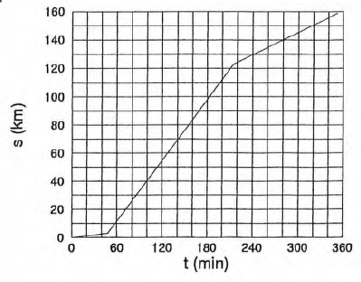
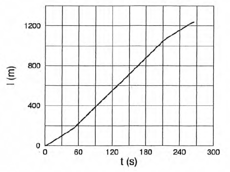
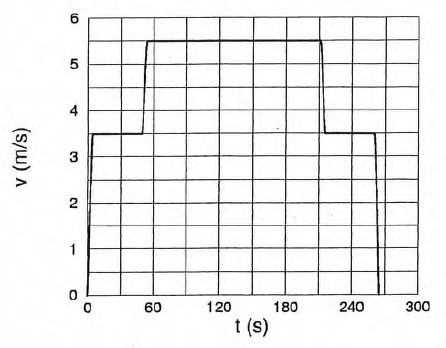
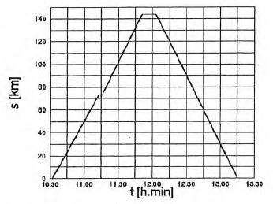
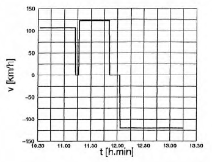
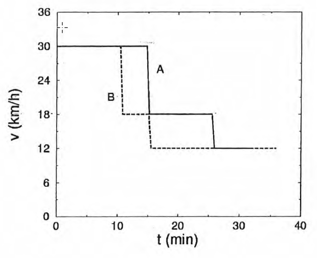
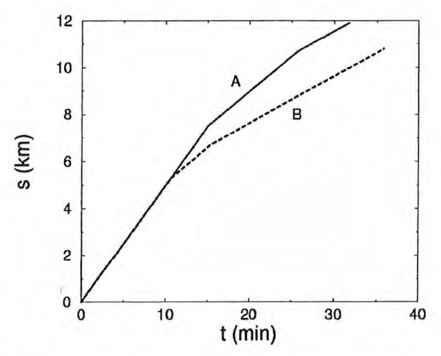

Lernziele, Zusammenfassung und Skript
Thematische Kapitelübersicht mit Verlinkungen ins Skript
Der Hauptunterschied besteht darin, dass in der Aristotelischen Theorie jede Bewegung eine dauernd wirkende Kraft benötigt, die in direktem Kontakt mit dem bewegten Objekt ist. In BURIDANs Impetus-Theorie ist dies nicht mehr so: Dem Objekt wird, wenn es in Bewegung gesetzt wird, eben ein Impetus erteilt, der es weiterbewegt. Das Objekt bewegt sich also von selbst weiter — bis der Impetus z.B. durch den Luftwiderstand vernichtet worden ist.
keine Bewegung (Das Objekt bleibt am gleichen Ort.)
Rückwärtsbewegung
Verlangsamung oder Rückwärts- Beschleunigung
negative Geschwindigkeit: Rückwärtsbewegung
Die Geschwindigkeit ist die Steigung im \(s-t-\) Diagramm: Wenn die Kurve steiler ist, ist die Geschwindigkeit grösser, wenn sie flacher ist, ist sie kleiner.
Weil die Geschwindigkeit dauernd ändert. Deshalb können wir sie nicht einfach nach \(v = \frac{s}{t}\) berechnen, d.h. indem wir die ganze zurückgelegte Strecke durch die gesamte, dafür benötigte Zeit dividieren.
Nein. Dadurch würde sich der Weg ergeben, den man zurückgelegt hätte, wenn man sich mit der Durchschnittsgeschwindigkeit bewegt hätte. Doch das tut man ja nicht.
Nein. Bewegungen und Geschwindigkeiten sind relativ.
Weil sich dort Züge begegnen. Und da könnte sich ein Zusammenstoss ereignen...
Thematische Kapitelübersicht mit Verlinkungen ins Skript

Aufgaben zum Kapitel und zusätzliches Übungsmaterial

Lernvideos und Tutorials

Lösungen zu Übungen und Kurzfragen
(diese Seite)
Gleichförmige Bewegung des Schalls \((v = c_{s})\) : \(\quad s = c_{s}t \approx 2\,km \)
(a)
Erster Abschnitt: \[ v_{1} = \frac{\Delta s}{\Delta t} = \frac{6\,km}{\frac{1}{3}\,h} = 18\,\frac{km}{h} \] Zweiter Abschnitt: \[ v_{2} = \frac{2\,km}{\frac{1}{3}\,h} = 6\,\frac{km}{h} \]
(b)
Die Geschwindigkeit entspricht der Steigung der Kurve. Grösste Geschwindigkeit (d.h. Kurvensteigung): zwischen 45 min und 50 min: \[ v_{max} = \frac{3\,km}{\frac{1}{12}\,h} = 36\,\frac{km}{h} \] Kleinste Geschwindigkeit: zwischen 40 min und 45 min: \(v_{min} = 0\).
(c)
\[ \bar v = \frac{s}{t} = \frac{14\,km}{1\,h} = 14\,\frac{km}{h} \]
(a)

Sportart \(t\,(min)\) \(s\,(km)\) Schwimmen 48 3 Radfahren 215 123 Laufen 352 159
(b)
\[ \begin{array}{rcl} v & = & \cfrac{\Delta s}{\Delta t} \\ v_{1} & = & \cfrac{3\,km}{48\,\cdot\,\frac{1}{60}\,h} = 3.75\,\cfrac{km}{h} \approx 3.8\,\cfrac{km}{h} \\ v_{2} & = & 43.1\,\cfrac{km}{h} \\ v_{3} & = & 15.8\,\cfrac{km}{h} \\ \bar v & = & \cfrac{s}{t} = \cfrac{159\,km}{\frac{352}{60}\,h} = 27.1\,\cfrac{km}{h} \end{array} \]
(c)
Rückstand: \(\quad t_{0} = 15\,\cdot\,60\,s = 900\,s\)
Athlet: \(\quad v_{a} = v_{1} = \cfrac{3.75\,m}{3.6\,s}\)
Boot: \(\quad v_{b} = 18\,\cfrac{km}{h} = 5\,\cfrac{m}{s}\).
Vorsprung Athlet: \(\quad \Delta s = v_{A}t_{0} \)
Diesen Vorsprung holt das Boot zeiten zusammen: mit der (gleichbleibenden) Relativgeschwindigkeit \[ \Delta v = v_{B} - v_{A} = \frac{\Delta s}{\Delta t} \] auf und braucht dafür die Zeit \[ \Delta t = \frac{\Delta s}{\Delta v} \] Zeitpunkt des Einholens nach dem Start des Athleten: \[ \begin{array}{rcl} t & = & t_{0} + \Delta t = t_{0} + \cfrac{v_{A}t_{0}}{v_{B} - v_{A}} \\ & = & \cfrac{v_{B}t_{0}}{v_{B} - v_{A}} = 1137\,s \approx 19\,min \\ \end{array} \] Strecke vom Start: \[ s = v_{A}t = 1184\,m \approx 1.2\,km \]
Das Boot fährt seeaufwärts, d.h. der Strömung entgegen. Es bewegt sich also gegenüber dem Land mit der Geschwindigkeit \(v_{B} - v_{S}\) Richtung Zufluss. Der Wind weht seeabwärts, also dem Boot entgegen. Daher addieren sich die Wind- und die Bootsgeschwindigkeit (relativ zum Land). Die Windgeschwindigkeit aus der Sicht des Bootes ist somit \(v = v_{B} - v_{S} + v_{W} = 11\,\frac{m}{s}\).
Radfahrerin 1 fährt 3.5 Runden mit \(v_{1} = 33\,km\frac{km}{h}\). In der selben Zeit fährt Radfahrerin 2 aber 4.5 Runden und ist daher im Verhältnis \(\frac{4.5}{3.5}\) schneller als diese. Also:
\[ v_{2} = \cfrac{4.5}{3.5}\,v_{1} = 42\,\frac{km}{h} \]
Die Bewegung hat drei Phasen: In zwei Phasen ist eine der Kabinen oberhalb des Mastes, in der mittleren Phase ist dies für keine der beiden der Fall. Für jede Phase gilt:
\[ v = const. \rightarrow s = vt \rightarrow t = \cfrac{s}{v} \] Die Gesamtzeit setzt sich aus den Einzelzeiten zusammen: \[ t = \cfrac{l_{1}}{v_{1}}\,\cdot\,2 + \cfrac{l - 2l_{1}}{v_{2}} = 265\,s \approx 4.5\,min \]  
Es ergeben sich folgende Diagramme:
 
Die Fahrtzeit einer Teilstrecke folgt aus \(\Delta s = v\Delta t:\)
\[ \Delta t = \cfrac{\Delta s}{v} \]Die gesamte Fahrtzeit ist jeweils die Summe der drei Teilzeiten:
\[ t = \Delta t_{1} + \Delta t_{2} + \Delta t_{3} = \cfrac{\Delta s_{1}}{v_{1}} + \cfrac{\Delta s_{2}}{v_{2}} + \cfrac{\Delta s_{3}}{v_{3}} \]Die Durchschnittsgeschwindigkeit berechnen wir aus dem gesamten Weg \(s\) und der gesamten Zeit \(t\):
\[ \bar v = \cfrac{s}{t} = \cfrac{\Delta s_{1} + \Delta s_{2} + \Delta s_{3}}{t} \]Für beide Fahrten erhalten wir aus den Teilstrecken folgende Werte:
\[ \begin{array}{|c|c|c|} \hline & A & B \\ \hline \Delta s_{1} & 7.5\,km & 5.3\,km \\ \Delta s_{2} & 3.2\,km & 1.4\,km \\ \Delta s_{3} & 1.2\,km & 4.1\,km \\ \Delta t_{1} & 15\,min & 11\,min \\ \Delta t_{2} & 11\,min & 5\,min \\ \Delta t_{3} & 6\,min & 21\,min \\ t & 32\,min & 36\,min \\ \bar v & 23\,\frac{km}{h} & 18\,\frac{km}{h} \\ \hline \end{array} \]Die Diagramme:

Die Lawine holt die Anfangsdistanz \(\Delta s_{0}\) mit der Relativgeschwindigkeit \(\Delta v = v_{L} - v_{S}\) auf. Weil diese Relativgeschwindigkeit konstant ist, gilt \(\Delta s_{0} = \Delta v\,t\), wobei \(t\) die Aufholzeit ist. Also:
\[ t = \cfrac{\Delta s_{0}}{\Delta v} = \cfrac{\Delta s_{0}}{v_{L} - v_{S}} = 0.0147\,h = 53\,s \] \[ s = v_{S}t = 1.18\,km \]
Nach der Zeit \(t\) hat Bauer A die Strecke \(v_{A}t\) zurückgelegt und Bauer B die Strecke \(v_{B}t\). Wenn \(t\) die gesuchte Zeit bis zur Begegnung ist, dann müssen diese beiden Strecken zusammen die Distanz der Bauernhöfe \(s\) ergeben:
\[ \begin{array}{rcl} v_{A}t + v_{B}t & = & s \\ (v_{A} + v_{B})t & = & s \\ t & = & \underline{\cfrac{s}{v_{A} + v_{B}} = 0.3\,h = 18\,min} \end{array} \](Wenn wir die Sache aus der Sicht von
Bauer A betrachten, kommen wir noch
schneller zum Ziel: Bauer B nähert sich
ihm mit der Relativgeschwindigkeit \(v_{A} + v_{B} = 60\,\frac{km}{h}\).
Weil er anfangs \(s = 18\,km\) entfernt
ist, braucht er dafür wie lange...?)
Bauer A ist in dieser Zeit \(t\) die Strecke \(x\)
gefahren:
So weit ist der Treffpunkt vom Bauernhof A entfernt.
Seitenzahl: \(\quad z = 5000\),
Seitennummer: \(\quad n = 2836, s = 640\,km, t = 6\,h\),
Protzky: \(\quad v_{1}\quad \) Murksin: \(\quad v_{2}\)
(a)
Die beiden bewegen sich mit der Relativgeschwindigkeit \(v = v_{1} + v_{2}\) aufeinander zu und legen in der Zeit \(t\) die Strecke \(s\) gleichförmig zurück.
Murksin ist um \(\Delta v\) langsamer als Protzky: \(\quad v_{2} = v_{1} - \Delta v\)
\[ \begin{array}{rcl} \cfrac{s}{t} & = & v = v_{1} + v_{2} \\ & = & v_{1} + v_{1} - \Delta v = 2v_{1} - \Delta{v} \\ v_{1} & = & \cfrac{\frac{s}{t} + \Delta v}{2} = 73\,\frac{km}{h} \\ v_{2} & = & v_{1} - \Delta v = 33\,\frac{km}{h} \\ \end{array} \]
(b)
Wenn sich beide relativ zur Luft mit der Geschwindigkeit \(v_{0}\) bewegen, dann erhält Protzky dadurch eine Geschwindigkeit gegenüber der Landschaft, die um die Windgeschwindigkeit höher liegt als \(v_{0}\). Murksin hingegen ist gegenüber der Landschaft um die Windgeschwindigkeit langsamer als \(v_{0}\). (Wir können uns vorstellen, die Luft bewege sich wie ein Fliessband von St. Petersburg nach Moskau. Auf diesen Fliessband reiten die beiden mit gleicher Geschwindigkeit).
Die Geschwindigkeitsdifferenz \(\Delta v\) ist daher doppelt so gross wie die Windgeschwindigkeit, die somit \(20\,\frac{km}{h}\) beträgt.
Kunigundes anfänglicher Zeitvorsprung: \(t_{0} = (3 + 2)\,min = 5\,min = 300\,s\)
Kunigundes Geschwindigkeit: \(v_{1} = 25\,\frac{km}{h} = \cfrac{25}{3.6}\frac{m}{s}\)
meine Geschwindigkeit: \(v_{2} = 30\,\frac{km}{m} = \cfrac{30}{3.6}\frac{m}{s}\)
Strecke zur Genossenschaft: \(s_{G} = 18 km\)
Wenn ich starte, ist Kunigunde bereits die Strecke \(s_{0} = v_{1}t_{0}\) gefahren. Ich hole diesen Vorsprung mit der Relativgeschwindigkeit \(v_{r} = v_{2} — v_{1}\) auf. Dazu benötige ich (wegen \(s = vt \rightarrow t = \frac{s}{v}\)) die Aufholzeit
\[ t_{A} = \cfrac{s_{0}}{v_{r}} = \cfrac{v_{1}t_{0}}{v_{2} - v_{1}} = 1500\,s = 25\,min \]In dieser Zeit bin ich die Strecke
\[ s_{A} = v_{2}t_{A} = v_{2}\,\cfrac{v_{1}t_{0}}{v_{2} - v_{1}} = 12500\,m = 12.5\,km \]gefahren. Ich erreiche also Kunigunde, bevor sie die Genossenschaft erreicht hat, denn \(s_{A} < s_{G}\).
(a)
Der schnellere Trakor bewegt sich relativ zum langsameren mit der Relativgeschwindigkeit \(\Delta v = v_{1} - v_{2}\).
Mit dieser Geschwindigkeit legt er während des Überholmanövers relativ zu ihm die Strecke \(2l + 2s\) zurück. Wenn \(t\) die Dauer des Überholmanövers ist, gilt (gleichförmige Bewegung): \[ \begin{array}{rcl} \Delta v & = & \cfrac{2l + 2s}{t} \\ t & = & \cfrac{2l + 2s}{\Delta v} =\cfrac{2(l + s)}{v_{1} - v_{2}} \\ & = & 23.04\,s \approx 23\,s \\ \end{array} \]
(b)
Anders gefragt: Welche Strecke legt der schnellere Traktor während des Überholmanövers (relativ zur Strasse) zurück? Gleichförmige Bewegung: \[ s = v_{1}t = 256\,m \approx 0.26\,km \]
Um die erlaubte Länge der Flaschenkolonne zu berechnen, müssen wir von der Fliessbandlänge \(l\) folgende beiden Strecken abziehen:
die Strecke \(s_{1}\), welche die Flaschen während der Zeit \(t_{1}\) zurücklegen, während der der Mitarbeit zum Fliessbandende geht:
\[ s_{1} = v_{F}t_{1} = v_{F}\cfrac{l}{v_{M}} \]die Strecke \(s_{2}\), welche die Flaschen während dem erforderlichen Zeit vorsprung zurücklegen (soweit müssen die Flaschen bei der Ankunft des Mitarbeits vom Bandende entfernt sein):
\[ s_{2} = v_{F}t_{v} \]Die gesamte Flaschenkolonne ist also \(s = l - s_{1} - s_{2}\) lang.
Die Zahl \(n\) der Flaschen ist das Verhältnis
dieser Strecke zum Durchmesser der Flaschen:
Die Aufgabe ist am einfachsten zu lösen, wenn man die Zeit betrachtet. Die beiden Radfahrerinnen fahren mit einer Relativgeschwindigkeit von \(20\,\frac{km}{h}\) auf einander zu. Weil sie anfangs \(20\,km\) voneinander entfernt sich, treffen sie sich nach einer Stunde. In dieser Stunde hat die Biene \(25\,km\) zurückgelegt, weil sie sich mit \(25\frac{km}{h}\) bewegt.
Die Antwort 2.18d ist richtig. Dr. Schmidthuber lässt Waldi 15 Minuten lang laufen, egal wohin er den Stock wirft! Wenn nach der längsten Laufzeit pro Wurf gefragt worden wäre, wäre die richtige Antwort 2.18b, also rückwärts gewesen, da Waldi die zusätzliche Strecke laufen müsste, die Dr. Schmidthuber während der Jagd nach dem Stock weitergegangen wäre. Die Frage bezog sich aber auch Waldis Laufzeit während Dr. Schmidthubers 15minütigem Spaziergang. Daraus lernen wir: Wir müssen immer die Frage beantworten, die tatsächlich gestellt worden ist und nicht ein andere...